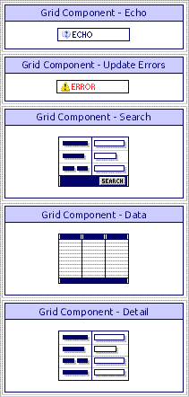
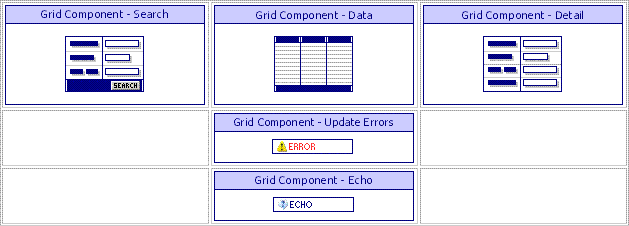

Changing the Locations of the Parts of a Grid Component
When you create a grid component with search and detail view parts and then place the grid onto an A5W page, you will see something like the following.

What you see are five groups of HTML code in five cells of a table. If you switch to the Source tab of the HTML Editor, you can see the HTML code.
|
<table> <tr> <td> <%A5 ?x_products_with_o.Output.Body.Grid_Echo %> </td> </tr> <tr> <td> <%A5 ?x_products_with_o.Output.Body.UpdateErrors %> </td> </tr> <tr> <td> <%A5 ?x_products_with_o.Output.Body.Search_HTML % ></td> </tr> <tr> <td> <%A5 ?x_products_with_o.Output.Body.Grid_HTML %> </td> </tr> <tr> <td> <%A5 ?x_products_with_o.Output.Body.DetailView_HTML %> </td> </tr> </table> |
You are free to move restructure the table and move the cells to other locations. For example, if you make the following reorganization of the HTML code:
|
<table> <tr> <td vAlign=top background=""> <%A5 ?x_products_with_o.Output.Body.Search_HTML %> </td> <td vAlign=top background=""> <%A5 ?x_products_with_o.Output.Body.Grid_HTML %> </td> <td vAlign=top background=""> <%A5 ?x_products_with_o.Output.Body.DetailView_HTML %> </td> </tr> <tr> <td></td> <td> <%A5 ?x_products_with_o.Output.Body.UpdateErrors %> </td> <td></td> </tr> <tr> <td></td> <td> <%A5 ?x_products_with_o.Output.Body.Grid_Echo %> </td> <td></td> </tr> </table> |
you will see this on the WYSIWYG tab.

As long as the <%A5 ... %> structures are not modified, you can place them anywhere on the page, even outside of the table structure see here.
See Also
Limitations
Web publishing applications only.